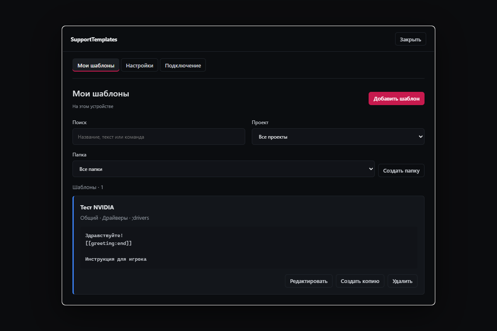
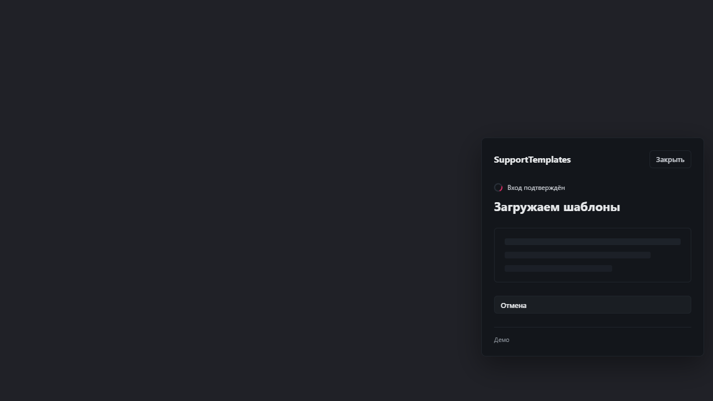
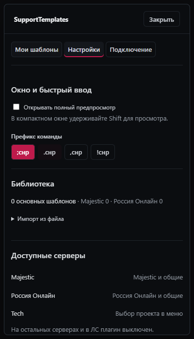

Показ за 5–7 минут
- Вход. Открыть меню в Discord, подтвердить код на локальной панели, дождаться списка.
- Быстрый ответ. Показать поиск, Shift и вставку в свой черновик.
- Мои шаблоны. Создать папку и цветной ответ с полем имени, вызвать по команде.
- Обновление FAQ. Изменить текст на странице подтверждения и увидеть новую версию в плагине.
- Что дальше. Открыть roadmap: API, приёмка, тикеты, BetterDiscord.
Пример для редактора
«Уточнение обращения» · общий проект · синий · папка «Собрание» · команда «уточнение»
Здравствуйте, {{имя}}!
[[greeting:end]]
Уточните, пожалуйста, когда появилась проблема и какие действия вы выполняли перед ней.
Приложите скриншот ошибки — это поможет нам разобраться.
Дизайн: резервные снимки
Скриншоты браузерного стенда реальных компонентов, не запись Discord. Полезны, если живой клиент тормозит.
Мои шаблоны

Загрузка после подтверждения входа

Настройки на узком экране

Границы демонстрации
Вход и обновления FAQ работают на локальном демосервере. Настоящий API панели ещё не подключён. Личные шаблоны в демо временные; двусторонней синхронизации нет. Основные FAQ через приложение менять нельзя — обновление показываем со стороны тестового сайта.
Звуки тикетов, таймер ответа, статистика и BetterDiscord — в плане. Плагин не отправляет сообщения автоматически.